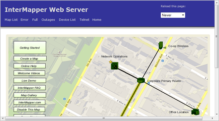

The Map Web Page
Use the Map web page to view the selected map.
|

A typical Map page. Click any link, network or device
to view detailed information about the item.
|
Note: The map that appears in the Map web page is actually a "snapshot"
graphic of the current state of the map at the time you request it. If you do
not refresh the page, the state of the map does not change. Use the Reload
this page dropdown menu and Set button to refresh the page.
- Click any link, device, or network to view detailed information about that
item.
InterMapper generates a PNG image if the web browser requests that format,
or JPEG image otherwise. The map image is static, but can be updated periodically
using the Reload this page dropdown menu and Set
button.
Viewing Information for a Link, Device, or Network
Click any link, device, or network to view detailed information about that
item. This is the same information that appears in a Status window. Here are typical displays:
Device Information
Device Information
Name: router.company.net.
DNS Name:router.company.net.
Address: 192.168.1.1
Status: UP
Protocol:Ping/Echo
Up Time: n/a
Availability:100%(of 1 hour, 29 minutes, 12 seconds)
Packet Loss:0.0%(of 143 total attempts)[Reset]
Recent Loss:None
Last updated Jun 23, 12:16:42; interval: 30 seconds
|
Typical Device Information.
Network Information
Network Information
Name: 192.168.1.0/24
IP Net:192.168.1.0/24 (255.255.255.0)
Sum In: 2 pkt/sec 548 byte/sec 0 error/min
Sum Out: 3 pkt/sec 316 byte/sec 0 error/min
Comment:
This is the network in the office.
It has an IP address of 192.168.1.0, and a subnet mask of
255.255.255.0.
|
Typical Network information.
Link Information
Interface Information(ifIndex = 1)
Device Name:router.company.net.
Description:EN1
Type: 10 MBit ethernetCsmacd(MTU=1500)
Status: UP for 4 days, 13 hours
Address: 192.168.1.1 (255.255.255.0)
MAC Address:00-00-C5-76-E2-EC
Interface Statistics
Utilization:0.01% (of10 MBit bandwidth)
Percent Err:0.0% (59 pkts w/o error)
Transmit Statistics(0.01% utilization)
Pkt/Second:0(5.88% multicast)
Byte/Second:73(590 bps)
Err/Minute:0(0 errors)
Disc/Minute:0(0 discards)
Percent Err:0.0% (17 pkts w/o error)
Receive Statistics(0.01% utilization)
Pkt/Second:1(59.5% multicast)
Byte/Second:93(748 bps)
Err/Minute:0(0 errors)
Disc/Minute:0(0 discards)
Percent Err:0.0% (42 pkts w/o error)
Last updated Jun 23, 12:21:02; sample: 37.94 seconds.
|
Typical Link Information.
Map Status
When you click a Map Status item, the map associated with that device appears,
rather than an information window.